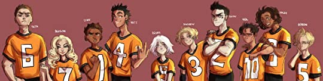

About Me

Hii, I'm Dishika Mehta, a college student with dark academia aesthetic and a serious problem of escapism!
Hii, I'm Dishika Mehta, a college student with dark academia aesthetic and a serious problem of escapism!
A literary blog that takes you a journey through the books I've read and how they've left a lasting impact: an exuberant amalgamation of the learning experiences that they bring and how living vicariously can teach you so much about life- the undeniably complex yet beautiful adventure.
It’s about second chances, Neil. Second, third, fourth, whatever, as long as you get at least one more than what anyone else wanted to give you.”
The Foxhole Court, The Raven King and The King's Men: the most heart rendering trilogy series I've ever read, these books are all about misfits of the Foxhole Court trying to get pieced together as a Palmetto State University Team in the jigsaw of Exy- the 'bastard' sport of speed, aggression and ferocity.
The character development portrayed through these novels, the diverse problems that every Fox in Coach Wymack 's team faced, the dilemmas that each of these broken souls have braved through and how they found a way to mend each other despite the constant hate, rejections, threats and trauma they faced: it took so much from me and gave me back so much more than I could've imagined.

The jovial, endearing and supremely tolerant Nicky learnt to let go of the need for his par ents' validation and embrace his identity and gender with pride. (Happy Pride Month yay!)
Neil, the quiet yet fierce boy on the run from his mafia lord, abusive father learnt to accept the fact that that he needed to let people in and that it's okay to not be okay. He learnt to stand up and fight back, but most importantly, to trust people and heal from his past by overcoming his angst and believing in himself.
"Don't make this about him, make this about you. You can fix this, right here, right now. Stop being collateral damage and make him fight for you."
Matt and Dan, the power couple of the team were the perfect portrayal of patience, compassion and resilience. They never pushed Neil to open up to them and gave him so much time and patience: like he was made of fragile glass. They show us how important it is to keep your calm even in the most adverse situations : by being strategic in a room full of impulsive people.
I loved the unreadable and manipulative Allison who left all the luxuries of her youth just to pursue her passion for Exy despite repercussions. She welcomed a life full of challenges and hardships, letting the world know that there's no stopping her when it comes to something she loved.
The sweet tempered Renee fought back after being physically assaulted and eventually learnt to embraced religion and Exy as an outlet and redemption for her other wrong-doings.
The distant Aaron went from never truly understanding his troubled brother Andrew to protecting him when he needed it the most. He put his family before his personal hatred.
Andrew the mentally unstable guy who'd go to any lengths to protect his own and his ability to love despite what the medication had turned him into. He let his pretence of not caring about Exy come apart just because it mattered a lot to everyone he cared about.
And Kevin Day, the outcast star player who kept up his endurance and rebellious spirit, his unquenchable thirst to be the best despite the unimaginable anguish and torment he'd survived in his past.
"Fight because you don't know how to die quietly. Win because you don't know how to lose. The king's ruled long enough- it's time to tear his castle down."
They showed immense professionalism: they were divided into two social groups but never failed to play as one on court. There were moments in the books where I was fueled by their tournament matches: the fiery passion, dedication and mesmerizing coordination they shared on court. The conflicting emotions and choices, the bitter-sweet feeling and the wholesomeness that these books leave you with is incomparable.
Self love is not just a millennial hashtag, it's something that a lot of us overlook when hypnotized by the superficial and seemingly flawless digitally ruled world.
"If you ask for half the truth, you'll only get half the truth."
I know it's challenging but stop being so critical and judgmental and start believing in yourself. Smile at yourself every once in a while and hustle for what drives and fuels you.
Do you have any trilogies that have left you in a state of euphoria or epiphany? Do let me know in the comments!
Thank you for reading and I'll be back with more soon!